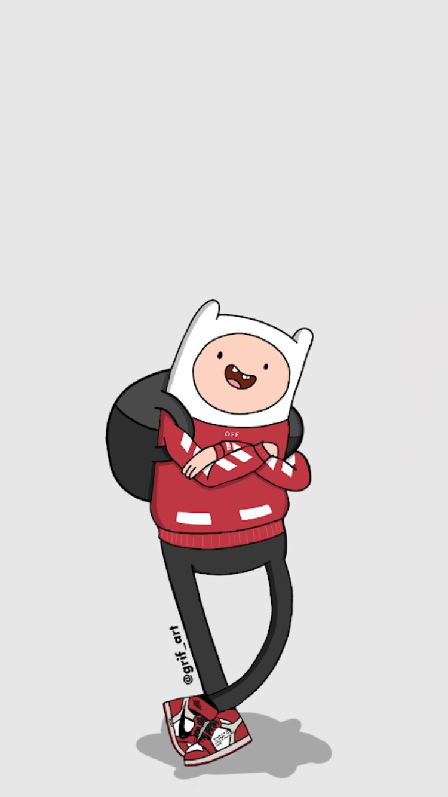

 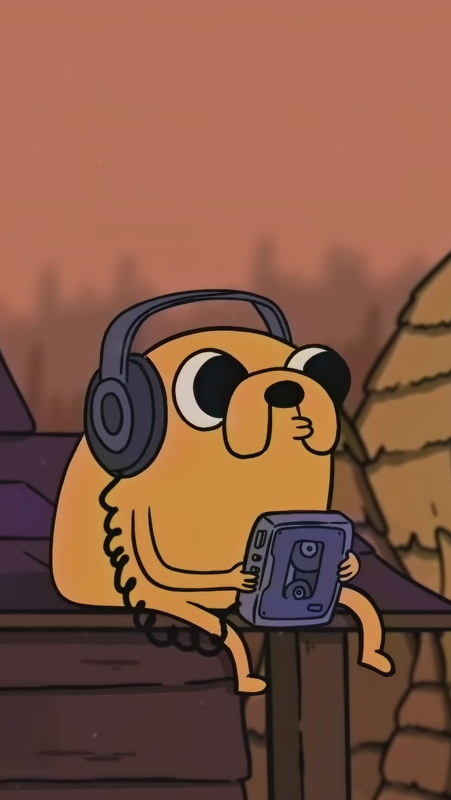
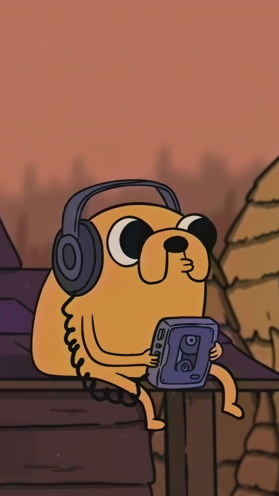
 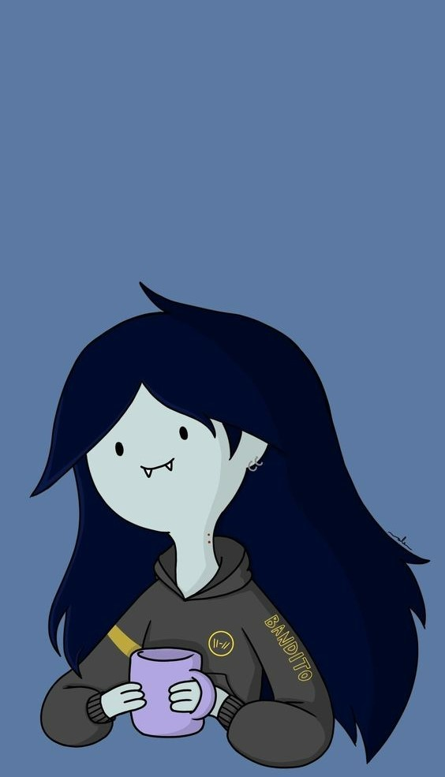
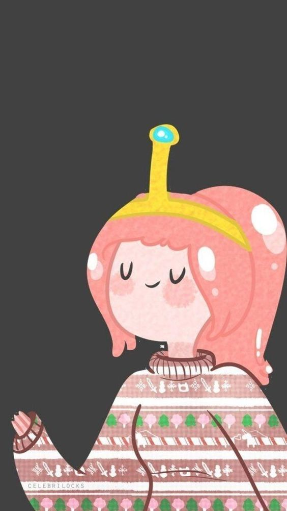
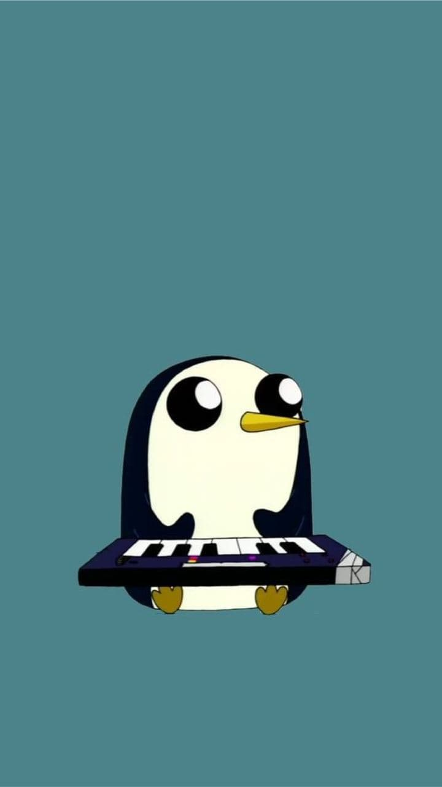
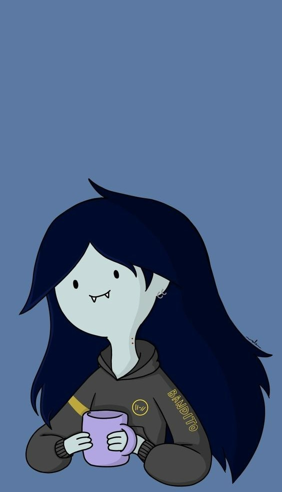
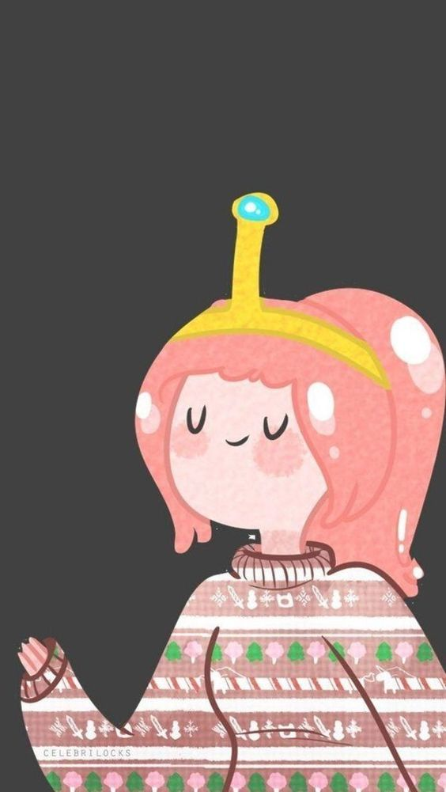
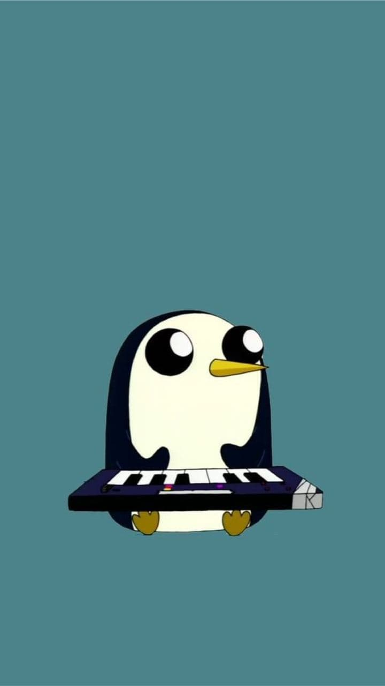


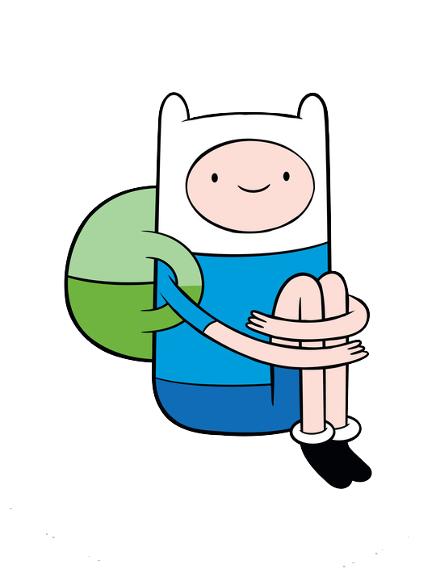
Finn Mertens, also known as Finn the Human, is a fictional character in the American animated television series Adventure Time created by Pendleton Ward. He is voiced by Jeremy Shada in most appearances. The character made his debut in the original pilot, where he is named Pen and voiced by Zack Shada, Jeremy's older brother. Jonathan Frakes voices Finn as an adult.
Prior to the start of the series, Finn was adopted as an infant by two anthropomorphic dogs named Joshua and Margaret, who found him in the woods. His best friend and adoptive brother Jake the Dog (John DiMaggio) accompanies him on many of his adventures in Ooo, the fictional world that the series is set in. Throughout the series, the unknown identity of Finn's biological parents and his status as the last human left in Ooo. Later in the series, it is revealed that there are other humans still living in Ooo, and that Finn's parents Martin and Minerva came from a community of survivors living on a chain of islands.
Finn has received critical praise for his development and coming-of-age narrative, which saw the character mature from a boy into a young man. Adam Muto, former showrunner for Adventure Time, has stated that Finn's progression from an aggressive and reckless boy into a more mature person was one of his favorite character arcs to write. A gender swapped version of Finn called Fionna appeared in the third season episode "Fionna and Cake", and quickly became a fan favorite. Fionna has since been confirmed to star in the spinoff series Adventure Time: Fionna and Cake

BMO, sometimes written phonetically as "Beemo" is a MO-series robotic video game console system/computer/VCR combo unit who lives with Finn and Jake. Despite being voiced by a female voice actress (Niki Yang, who considers BMO as male) BMO has no definite gender, and characters (including BMO) refer to BMO in a variety of ways throughout the show, including using both male and female pronouns, as well as terms such as "m'lady" or "little living boy". Additionally, whenever genderbent version of other characters are portrayed (such as in the episode Fionna and Cake and in the Adventure Time Munchkin card game set), BMO's portrayal has no noticeable differences in design. BMO has the features of other household objects, such as a portable electrical outlet, music player, camera, alarm clock, flashlight, strobe light, and video player Despite being an object used for recreation by Finn and Jake, BMO is still considered a close friend and treated as an equal by the two. BMO speaks English with a Korean accent. In the episode "Five Short Graybles", it was revealed that BMO secretly emulates a discussion between a mirrored version of themself, which BMO names "Football", and pretends to be human while teaching Football human habits by attempting to imitate activities such as brushing teeth and using the toilet. BMO was created by Moseph "Moe" Maestro Giovanni, an inventor of robots who created the entire MO-series line, a thousand years before the events
of the series. Though he built one million MO-series computers, Giovanni specifically designed BMO to understand fun; Giovanni invented BMO to help him raise his own son, but because he never had kids, he released BMO to find another family. BMO reappeared in the Adventure Time: Distant Lands, special "BMO", in which the character teamed up with an anthropomorphic rabbit named "Officer Y5" and a silent shapeshifting service android named "Olive" to save a space station named the Drift.
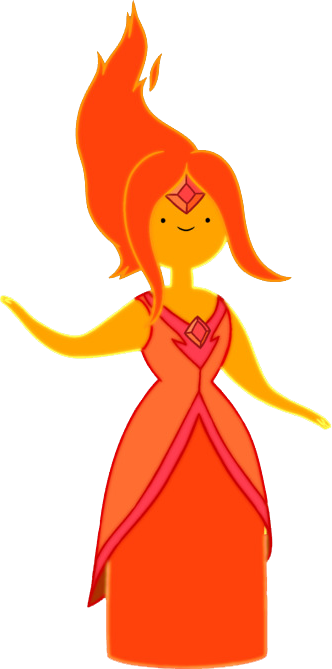
Flame Princess, whose first name is Phoebe,is the 16-year-old princess of the Fire Kingdom, the daughter of the Flame King, and is one of Finn's friends. Like all other inhabitants of the Fire Kingdom, she is covered with fire, the very flames emitted from her body being extensions of herself that intensify when she becomes emotionally excited.While she was initially referred to as being destructive by her own father, she has a more naïve nature that prompts her to act on her emotions. Finn describes her as "passionate". When she was a toddler, her father attempted to exile her to Ooo out of fear that she would one day usurp the throne, but when Princess Bubblegum returned her, he locked her up instead. In the episode "Ignition Point" after asking Finn to retrieve candles from the Fire Kingdom, she inadvertently expressed her dislike of her father; this largely stems from her imprisonment.
Eventually, Flame Princess begins to question herself, and doubts whether or not she is in fact evil. Finn is insistent that she is not evil and takes her on a journey into a dungeon to help her sort out her thoughts. Flame Princess comes to the conclusion that, while she is a lover of destruction, she only enjoys destroying bad guys. Flame Princess and Finn began a relationship sometime before the events of "Burning Low" However, in the episode "Frost & Fire", she breaks up with Finn after he inadvertently insults her in an attempt to get her and the Ice King to fight each other. Confused by her feelings, she overthrows her father as king and installs a new government and outlaws lies of any kind. She forgives Finn for what he did to her, allows him to visit any time, but declines his offer to rekindle their romantic relationship.In "Bun Bun", Finn genuinely apologizes for the way he treated Flame Princess, and the two once again become friends
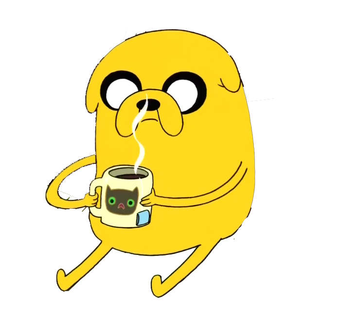
Jake the Dog is Finn's best friend and adoptive brother. He is a 28-year-old—in "magical dog years"—shapeshifting bulldog.The episode "Joshua & Margaret Investigations" reveals that when Joshua and Margaret—Finn and Jake's parents—were on an investigation, Joshua was bitten by a shape-shifting, other-worldly entity. Joshua, infected by the creature's venom, subsequently birthed Jake from his head.Jake's magic powers allow him to stretch or shrink any part of his body to any shape and size, ranging from becoming gigantic to becoming incredibly small. His powers help Finn considerably in combat and transportation, but are also sometimes used as nothing more than jovial forms of expression. Acting as a confidant and mentor to his energetic brother, Jake has a laid-back attitude in most situations, but loves adventure and will eagerly fight when he needs to do so. Jake is in a relationship with Lady Rainicorn, and they have five children together as seen in the episode "Jake the Dad". The two were drawn to each other due to their shared interest in playing the viola.

Marceline the Vampire Queen is a half-human and half-demon vampire, and the eponymous Vampire Queen, after having killed the previous Vampire King, as seen in Stakes. Although she is over a thousand years old, she appears in the form of a young adult. She is usually shown playing her axe bass, which was formerly her family's heirloom battle axe. Marceline and her father, Hunson Abadeer, have trouble accepting one another. Initially, Marceline feels that her father does not care for her and expresses her feelings through music. Furthermore, Abadeer constantly pressures Marceline to follow in the family business and take over ruling the Nightosphere, a prospective job Marceline does not want. Marceline and the Ice King also have a complicated relationship. In the episode "I Remember You", it is revealed that the Ice King—then, the human man named Simon Petrikov—befriended Marceline during the aftermath of the Mushroom War
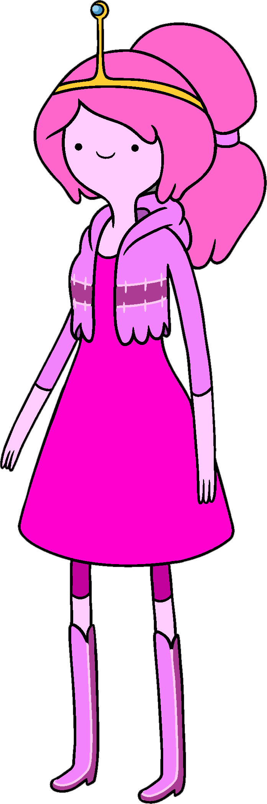
Princess Bubblegum is a bubblegum humanoid, comparable to the inhabitants of the Candy Kingdom which she rules. The official series website has described her as "a millionaire nerd enthusiast [who] immerses herself in every branch of geekdom". She and Finn have a complex relationship. For the longest time Finn had a crush on Bubblegum, and although she cares for him a great deal, she did not return his feelings for him. In the episode "What was Missing", it is implied that she and Marceline may have had some sort of relationship in the past. This later caused an online controversy over her and Marceline's sexual orientation. In the second-season finale "Mortal Recoil", after being possessed by The Lich, she was accidentally shattered and returned to life as a 13-year-old due to the doctors' not having enough gum to rebuild her to her proper age, though it appears that her memories have remained intact. In the episode "Too Young", she becomes 18 again by absorbing the parts sacrificed by her candy subjects in order to reclaim her kingdom from the Earl of Lemongrab. After her brush with death, she has begun to feel more and more vulnerable. As a result, she created the clone-Sphinx named Goliad to serve as her heir lest she die on the throne. During the fifth and sixth seasons, it was gradually revealed that Bubblegum had an elaborate spy network, allowing her to monitor nearly everyone in Ooo. After growing increasingly darker and more devious, Bubblegum's Machiavellian actions were finally confronted by Flame Princess in "The Cooler", and since then, Bubblegum has made a concerted effort to relax her need to control everything. In the two-part sixth-season finale, Bubblegum is peacefully deposed after the candy citizens vote to replace her with the King of Ooo (voiced by Andy Daly). Rather than fight her rival, Bubblegum willingly goes into exile with Peppermint Butler until returning to the Candy Kingdom in the aftermath of the Stakes miniseries
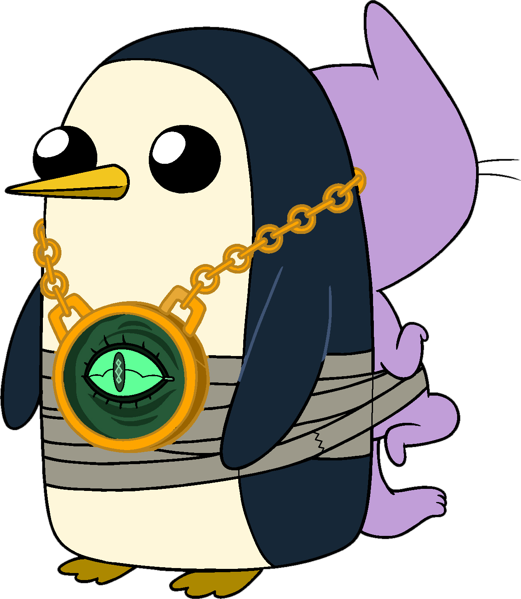
Gunter is a penguin that most commonly accompanies the Ice King, despite occasionally attempting to do harm to him. Although Gunter has appeared in many episodes, it is heavily implied that there are many other Gunters, and the name is simply something that the Ice King calls all of his penguins. The Ice King also referred to Marceline as Gunter while she traveled with him. The reason that the Ice King is seemingly fixated on the name is due to the nature of the ice crown: it was originally constructed by a magician named Evergreen (also voiced by Tom Kenny), whose apprentice was named Gunter (voiced by Pamela Adlon). This original Gunter later used the crown in an attempt to become like his master, at the cost of his sanity. Thus, the name "Gunter" seems to be intrinsically connected to the magic of the crown. During the sixth season, Gunter the penguin is revealed be a primordial space demon named Orgalorg, who desired to absorb the catalyst comet. But Orgalorg ended up in his current state after being defeated by Grob Gob Glob Grod and exiled to early Earth. The planet's gravity condensed Orgalorg into his current powerless and amnesiac penguin-like form as he wandered the planet for ages before he was found by the Ice King. Regardless of the memory loss, Gunter accidentally regains his memories and orchestrates a series of events to use the dethroned Bubblegum's spaceship to assume his true form and absorb a catalyst comet. But he is defeated by Finn, and he regresses back to his weakened state. Gunther later acquires Ice King's crown in the series finale, using it to become the Ice Thing and taking Simon's place as the ruler of the Ice Kingdom. The character's name has been pronounced a variety of ways, including ; this is due to the fact that in the original script, the name had an umlaut over the "u", causing Kenny to use the proper German pronunciation.
When the umlaut was dropped, Kenny switched to a different name. In order to justify this discrepancy, the crew rationalized that there were many penguins with similar sounding names
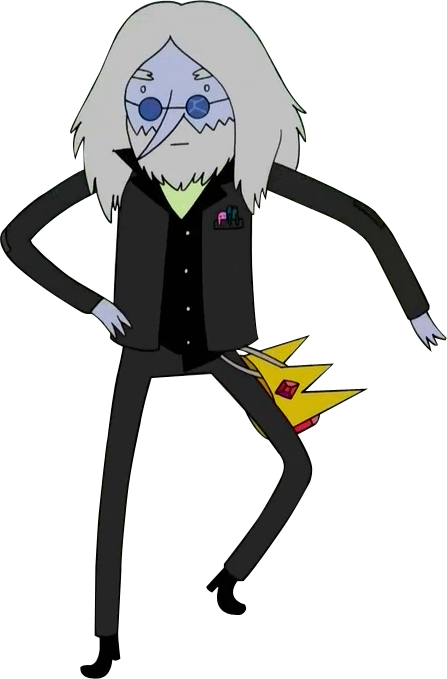
Ice King is a recurring antagonist-turned-supporting protagonist of the series, and is 1,043 years old. The Ice King frequently steals princesses throughout Ooo to forcefully marry them, Princess Bubblegum being his usual target. His ice-based magic abilities come from a magical crown he wears, which directly causes his insanity. The sixth season episode "Evergreen" reveals that the crown was created millions of years prior to the start of the series by an ice elemental named Evergreen in order to stop a comet from destroying all life on the planet. Though Ice King is defined as completely crazy by many, he is actually lonely and misunderstood. Furthermore, he is secretly envious of Finn and Jake for being such good friends. Finn and Jake learned during the events
of "Holly Jolly Secrets" that the Ice King was originally a human antiquarian named Simon Petrikov who bought his crown from a dock worker in northern Scandinavia, predating the Mushroom War. Wearing the crown, Petrikov began to lose both his mind and then his fiancée Betty; this explains his subconscious need for princesses. He soon began deteriorating in both mind and body over the years into his current state. Sometime before the Mushroom War he also discovered the Enchiridion. 996 years prior to the events of the series and directly after the Mushroom War, he met, befriended and cared for young Marceline. Eventually, he realized that his deteriorating mind and behavior would possibly become a threat to young Marceline. Thus, he wrote a letter to Marceline, describing why he could not help her anymore and imploring her to forgive him for whatever wrong he might do with the crown possessing him
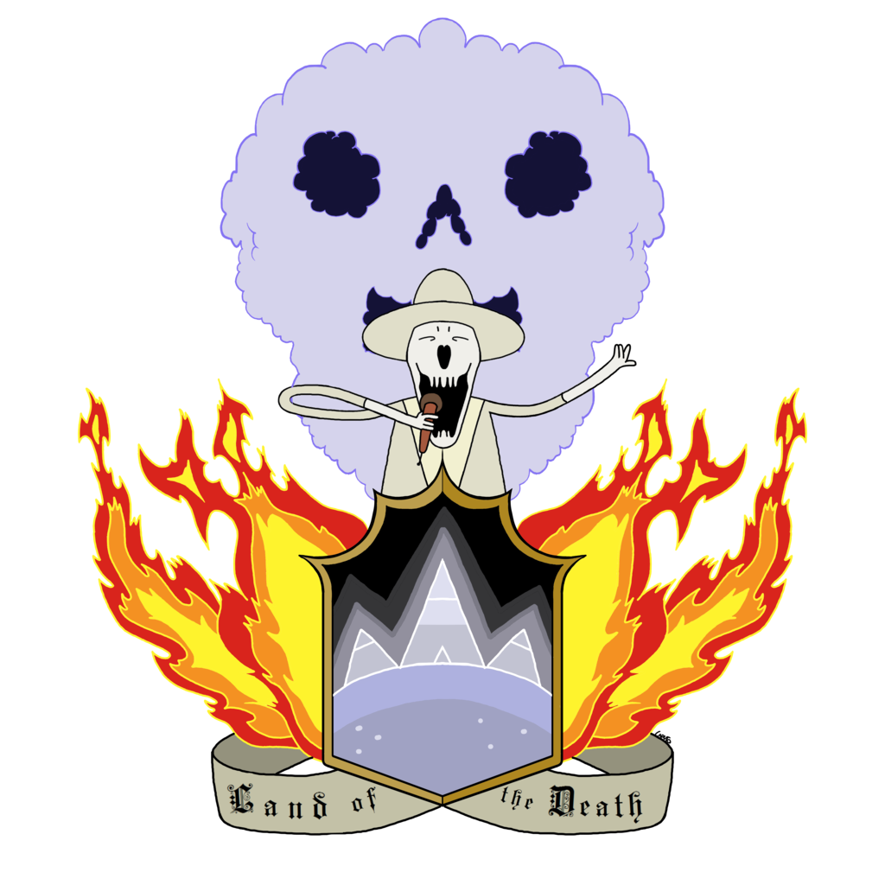
Death is the ruler of the Land of the Dead and the Dead Worlds who debuted in the episode "Death in Bloom". In his first appearance, Death plays the double-bass drums in a competition against Finn. He almost kills Finn, but gives back Jake's memory and the life of Princess Bubblegum's plant after Finn mentions Peppermint Butler. Death is shown to have various powers, such as the "Kiss of Death", encasing people in force fields, and sending people back to the Land of Ooo. Years later into the future he is destroyed after being bitten by his son New Death, who took over his job and was soon possessed by The Lich. The role is then held by Mr. Fox
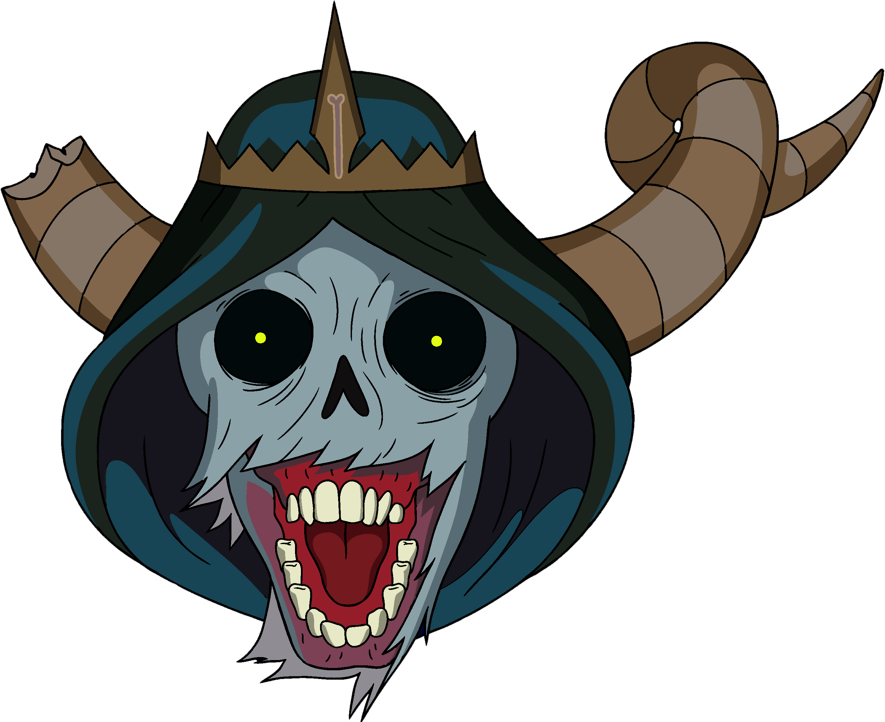
Lich is the twenty-sixth episode and season finale of the fourth season of the American animated television series Adventure Time. The episode was written and storyboarded by Tom Herpich and Skyler Page, from a story by Patrick McHale, Kent Osborne, Pendleton Ward. It originally aired on Cartoon Network on October 22, 2012. The episode guest starred Lou Ferrigno as Billy, and Ron Perlman as the Lich.
The series follows the adventures of Finn (voiced by Jeremy Shada), a human boy, and his best friend and adoptive brother Jake (voiced by John DiMaggio), a dog with magical powers to change shape and grow and shrink at will. In this episode, Finn has an ominous dream about the Lich, and sets off with Jake to warn Billy. Billy reveals that they must unite the gems of all the crowns of power, place them in the Enchiridion, and open a portal to the multiverse. However, it is revealed that the Lich is actually disguised as Billy. Finn and Jake then follow him through the multiverse